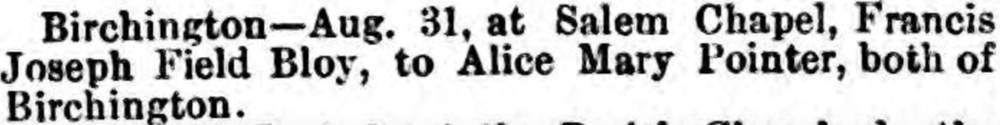
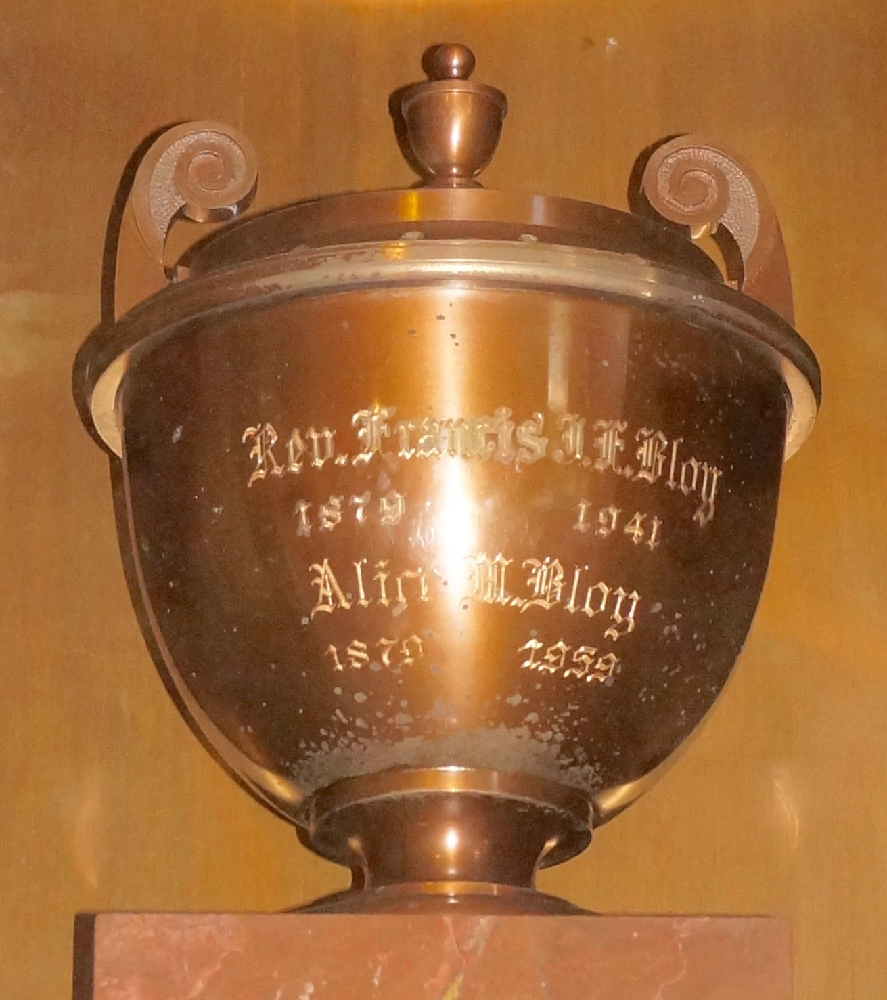

Alice Mary Bloy (née Pointer) 1879 - 1959
[ Home ] | [ Calendar ] | [ Surnames Index ] | [ Errors ] | [ Family History ]The child of George Pointer (a house carpenter) and Esther Spratt, Alice Pointer, the first cousin three-times-removed on the father's side of Nigel Horne, was born in Birchington, Kent, England on 29 Jan 18791 and married Francis Bloy (a plumber with whom she had 2 children: Francis Eric Irving and Dulcie Isabella) at Salem Chapel in Birchington on 31 Aug 19013.
During her life, she was living at Station Road in Birchington on 3 Apr 18816; at Hughenden Terrace in Birchington on 5 Apr 189110; on Kingsdown House, St Peters Park Road, Broadstairs, Kent, England on 2 Apr 191111 - less than a mile from her first cousin once-removed on her mother's side Leonard Spratt who was living at 11 Grotto Road, Cliftonville, Kent; in Maricopa, Arizona, USA on 1 Jan 19207; in Kirkwood, St. Louis, Missouri, USA on 1 Apr 19308; in La Jolla, San Diego, California, USA in 19354; in Pasadena, Los Angeles, California on 1 Apr 19409; at 1417B Bank Street, Los Angeles, California in 19425; and at 544 Saratoga Street, Fillmore, Ventura, California in 1956. In 1911 she travelled from New York, New York, USA (arrived on the St Louis) to Southampton, Hampshire, England, departing on 1 Oct, arriving on 23 Sep.
She died on 26 Nov 1959 in Los Angeles, California, USA2.
Parents
- George was born c. 1838
- Esther was born in 1836
Children
- Francis Eric Irving was born on 17 Dec 1904
- Dulcie Isabella was born on 22 Jun 1907
Citations
- England & Wales births 1837-2006 - Findmypast
- California, Death Record Index, 1940-1997 - Findmypast
- England & Wales Marriages 1837-2005 - Findmypast
- US Census 1940 - Findmypast
- California, Voter Registrations, 1900-1968
- 1881 England, Wales & Scotland Census - Findmypast (was age 2 and the daughter of the head of the household)
- US Census 1920 - Findmypast (was age 40 and the wife of the head of the household)
- US Census 1930 - Findmypast (was age 51 and the wife of the head of the household)
- US Census 1940 - Findmypast (was age 61 and the wife of the head of the household)
- 1891 England, Wales & Scotland Census - Findmypast (was age 12 and the daughter of the head of the household)
- 1911 Census for England & Wales - Findmypast (was age 32 and the wife of the head of the household)
Media
Thanet Advertiser 7 Sep 1901

New York Manifest
US Naturalisation

Ventura, California, County Directory, 1956
Alice Pointer - urn

Alice Pointer - US Naturalisation

St Louis, American Line, Passenger Manifest

England & Wales births 1837-2006 - BMD/B/1879/1/AZ/000456/080
England & Wales marriages 1837-2008 - BMD/M/1901/3/AZ/000305/042
1881 England, Wales & Scotland Census - GBC/1881/0004822330
1920 US Census Transcription - USC-1920-004964230-00636-036
1930 US Census Transcription - USC-1930-004951811-00006-010
California, Death Record Index, 1940-1997 Transcription - US-MCV-786204-16610136447759923118
US Census 1940 - USC/1940/1483398453
Family Tree

Map
Generated by ged2site. Last updated on Jul 3, 2024
Known Issues
Residence record for 1956 contains no citation
Removing leading 0 from residence date '02 Apr 1911'
Listed in the residence for 1935, but spouse Francis Bloy is not
Census information missing between Census UK 1891 and Census UK 1911